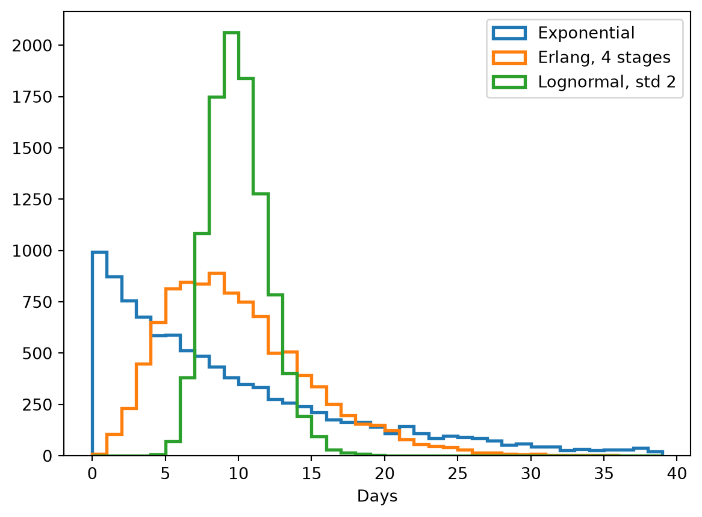
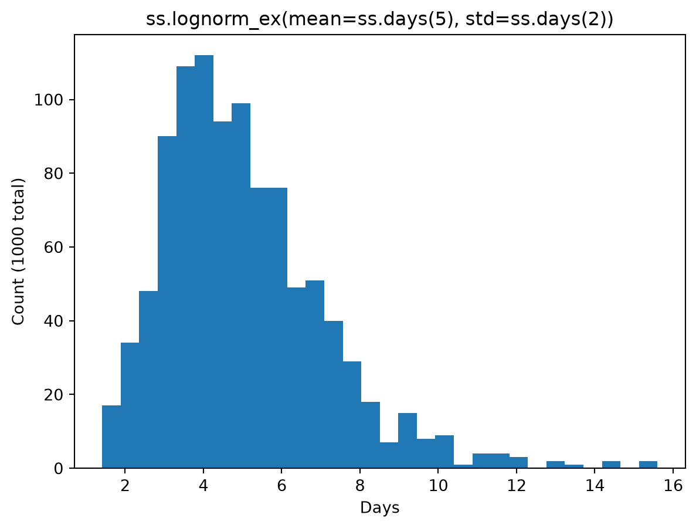
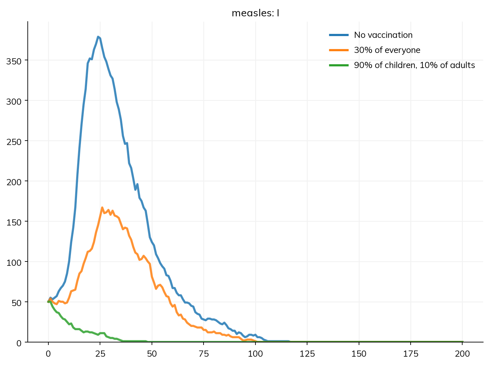

Distributions appear in a model in three ways: as the distribution of a duration (how long people stay in a state, or the delay before an event is reported), as variation between people (each person’s own value of a parameter), and, in modules written as code, as the random draws that decide what happens to each person (who is infected, who tests positive). This page covers the distributions Starsim has, how to choose one for a duration, and how to use them in each of these ways.
Uncertainty about a single value, such as a parameter being fitted, is not variation between people; it is a prior, given with ss.par(..., prior=...) and used only in calibration.
Distributions of durations
A duration given as a single value, such as I >> R @ ss.days(8), is the mean of an exponential distribution, as in an ODE model. The shape of the distribution matters: with the same mean, it changes when an epidemic peaks and how fast it grows (Durations). These are the distributions most used for durations, each with a mean of 10 days:
import numpy as npimport matplotlib.pyplot as pltimport starsim as ssdurations = {'Exponential': ss.expon(scale=ss.days(10)),'Erlang, 4 stages': ss.erlang(k=4, mean=ss.days(10)),'Lognormal, std 2': ss.lognorm_ex(mean=ss.days(10), std=ss.days(2)),}plt.figure()for label, dist in durations.items(): draws = dist.rvs(10_000) # In days, the unit it was given inprint(label, '- share under 4 days:', np.mean(draws <4).round(2)) plt.hist(draws, bins=np.arange(0, 40), histtype='step', lw=2, label=label)plt.xlabel('Days')plt.legend()plt.show()
Starsim kernels: Rust, OUT OF DATE (built before its source last changed, so results may be wrong): run "./build" in starsim/solvers/rust/
Exponential - share under 4 days: 0.33
Erlang, 4 stages - share under 4 days: 0.08
Lognormal, std 2 - share under 4 days: 0.0

With an exponential distribution, a third of people leave within 4 days, and a few stay for a month or more. An Erlang distribution with k stages (a gamma distribution with a whole-number shape) has less spread, a standard deviation of the mean divided by √k, and a lognormal is given by its mean and standard deviation directly, as a study would report them. A fixed duration, ss.constant(ss.days(10)), has no spread at all.
In a model, a distribution of durations goes after @, or as dur=:
onset = E >> I @ ss.erlang(k=4, mean=ss.days(10))recovery = I >> R @ ss.lognorm_ex(mean=ss.days(8), std=ss.days(2))recovery = I >> R @ ss.lognorm_ex(mean=8, std=2, unit='days') # The same: the unit given once
A distribution’s unit is given on its parameters, as typed durations, or once with unit=, which applies to every parameter of it that is a time. As agents, each person draws their own duration when they enter the state. As compartments, there are no individuals to draw for, so an Erlang distribution is run exactly as k compartments in a row (stages), a fixed duration as one compartment for each step people have been in the state, and any other distribution as Erlang stages with the same mean and standard deviation, with a note that says how many.
Variation between people
A distribution given as a parameter’s value gives each person their own value of it. A distribution of durations is one example; a share (p=), or the rate of a transition, can vary between people too. A model whose parameters vary between people, other than durations, needs individuals to hold their values, so it runs as agents.
A value that differs by group, rather than at random between people, is better given with ss.by() (Parameters): it is the same for everyone in a group, and runs under every solver.
See the API reference for each. A distribution of your own can be written by subclassing ss.Dist.
A fixed number of people
Some things are a number of people, not a share: to start an outbreak with exactly 5 infectious people, give a number (init_n=dict(I=5), or init_prev=5, since above 1 it is a number of people):
S, I, R = ss.states('S I R')infection = S >> I @1.9*Irecovery = I >> R @ ss.days(8)measles = ss.Disease(infection, recovery, init_prev=5)sim = ss.Sim(measles, n_agents=10_000, stop=ss.days(50), verbose=0)sim.init()print('Infectious at the start:', sim.diseases.measles.I.sum())
Infectious at the start: 5
ss.choose_n() can be used wherever a Bernoulli distribution can: filter() gives the people chosen, split() both those chosen and the rest, and rvs() a true-or-false value for each person. It can weight people (weights=, a value or a function of the people), so that some are more likely to be chosen. Unlike choosing at random from a list, it picks mostly the same people in two sims that differ slightly, which keeps comparisons between scenarios precise (Random numbers). Here the same choice of 5 people out of 20, made with and without person 3 (one of those chosen), picks the same people apart from person 3, who is replaced by one other; and a choice weighted by age picks older people:
sim = ss.Sim(n_agents=20, verbose=0).init()uids = sim.people.auidschoose_a = ss.choose_n(5, name='Choose 5').init(sim=sim) # Two identical distributions, as if in two simschoose_b = ss.choose_n(5, name='Choose 5').init(sim=sim)print('Chosen from everyone:', choose_a.filter(uids))print('Chosen without person 3:', choose_b.filter(uids.remove(3)))by_age = ss.choose_n(5, weights=lambdaself, sim, uids: sim.people.age[uids], name='Choose by age').init(sim=sim)chosen, not_chosen = by_age.split(uids)print('Mean age of those chosen:', sim.people.age[chosen].mean().round(1))print('Mean age of the rest:', sim.people.age[not_chosen].mean().round(1))
Chosen from everyone: [ 3 4 5 12 15]
Chosen without person 3: [ 4 5 11 12 15]
Mean age of those chosen: 57.3
Mean age of the rest: 30.2
Working with a distribution
A distribution can be made, drawn from, and looked at on its own. Outside a sim, one with a unit draws in that unit, here days, and shows what it was made from:
dist = ss.lognorm_ex(mean=ss.days(5), std=ss.days(2))print(dist)print(dist.rvs(5)) # Five draws, in daysprint('Mean:', dist.dist.mean())print('95% of draws are between', dist.dist.ppf([0.025, 0.975]).round(2))draws = dist.plot_hist(n=1000, bins=30) # Returns the draws
ss.lognorm_ex(mean=ss.days(5), std=ss.days(2))
[2.23074401 4.8888378 7.10934066 4.58126451 5.30768619]
Mean: 5.0
95% of draws are between [2.18 9.88]

In a sim, the same distribution draws in steps of its module instead, and from the sim’s random numbers (Random numbers). One with no unit, such as ss.normal(0, 1), draws outside a sim when made with strict=False, which says it need not use the sim’s random numbers.
dist.dist is the SciPy distribution with its parameters, for its mean, quantiles (ppf), density, and so on.
A distribution can round what it draws, which matters for numbers that must be whole, such as a duration in steps: round=True rounds each value up or down at random in proportion to how close it is (so the mean is kept), and round='nearest' rounds to the nearest whole number. Either can be given when the distribution is made, or when drawing. Here a duration of about 5 days, in a sim with steps of a day, drawn for 10 people three ways (reset=True uses the same random numbers each time):
sim = ss.Sim(n_agents=10, dt=ss.days(1), start='2025-01-01', dur=ss.days(30), verbose=0).init()dur = ss.lognorm_ex(ss.days(5), ss.days(2), round='nearest', name='Rounded duration')dur.init(sim=sim)print('Not rounded:', dur.rvs(sim.people.uid, round=False, reset=True).round(2))print('Nearest: ', dur.rvs(sim.people.uid, reset=True)) # As set when it was madeprint('At random: ', dur.rvs(sim.people.uid, round=True, reset=True))
The parameters of a distribution that is already made, such as the default of a library module, can be changed with set(): ssl.Measles().pars.p_death.set(p=0.05) (see Library: diseases).
Distributions in modules written as code
In a module written as code, a distribution is made once, as a parameter (in define_pars()) or an attribute (in __init__()), and drawn from at each step for the people it is about:
dist.rvs(uids) gives one value for each of the people given (by their IDs, or a true-or-false array over people).
For a Bernoulli distribution, dist.filter(uids) gives the people for whom it came out true, and dist.split(uids) both those and the rest.
Drawing for people, rather than a number of values, is what lets each person keep their own random numbers across scenarios, so that two sims differ only where their scenarios do (Random numbers). Making a distribution at every step instead of once breaks this.
A distribution’s parameters can be functions, of the module, the sim, and the people (fn(self, sim, uids)), worked out each time it is drawn from, for the people it is drawn for. The function returns one value for each person (or a single value for all of them), and can use anything the sim knows: their ages, their states, the time.
Here an intervention written as code vaccinates susceptible people against measles on the first day, each with probability p_vx, a Bernoulli distribution made once, as a parameter. A perfect vaccine is given by moving those vaccinated from S to R (a change by UID to a state of a declared disease, which its counts see). The probability can be a single value, or a function of the people: here, 90% of children under 15 and 10% of adults, against 30% of everyone. Measles spreads mostly among school-age children (10 contacts a day in school, 2 in the community), so the two campaigns use about the same number of doses, but with very different effects:
class Campaign(ss.Intervention):""" Vaccinate susceptible people against measles on one day, each with probability p_vx (a perfect vaccine) """def__init__(self, p_vx=0.3, day=1, **kwargs):super().__init__(**kwargs)self.define_pars(p_vx=ss.bernoulli(p=p_vx), day=day) # The distribution is made once, hereself.update_pars(**kwargs)returndef init_results(self):super().init_results()self.define_results(ss.Result('n_vaccinated', dtype=int, label='Vaccinated'))returndef step(self):ifself.ti ==self.pars.day: measles =self.sim.diseases.measles vaccinated =self.pars.p_vx.filter(measles.S.uids) # Draw for the susceptible people only measles.S[vaccinated] =False measles.R[vaccinated] =Trueself.results.n_vaccinated[self.ti] =len(vaccinated)returndef p_by_age(self, sim, uids):""" 90% for children under 15, 10% for everyone else """return np.where(sim.people.age[uids] <15, 0.9, 0.1)def make_sim(campaign=None): S, I, R = ss.states('S I R') measles = ss.Disease(S >> I @0.04*I, I >> R @ ss.days(8), init_prev=0.01, name='measles') school = ss.RandomNet(name='school', n_contacts=10, age_range=[5, 15]) community = ss.RandomNet(name='community', n_contacts=2)return ss.Sim(measles, networks=[school, community], interventions=campaign, n_agents=5000, stop=ss.days(200))scenarios = {'No vaccination': make_sim(),'30% of everyone': make_sim(Campaign(p_vx=0.3)),'90% of children, 10% of adults': make_sim(Campaign(p_vx=p_by_age)),}msim = ss.parallel(scenarios, parallel=False)for label, sim inzip(scenarios, msim.sims): doses = sim.results.campaign.n_vaccinated.sum() if'campaign'in sim.results else0print(label, '- doses:', int(doses), '- largest number infectious:', int(sim.results.measles.I.max()))msim.plot('measles.I')
MultiSim: 3 runs of 3 scenarios (No vaccination, 30% of everyone, 90% of children, 10% of adults)
Done in 3.4 s
No vaccination - doses: 0 - largest number infectious: 379
30% of everyone - doses: 1506 - largest number infectious: 167
90% of children, 10% of adults - doses: 1452 - largest number infectious: 50

With the same number of doses, vaccinating the children who carry most of the transmission stops the outbreak, while spreading the doses over everyone only slows it. In a module, init() is done for each of its distributions when the sim is initialized; a distribution used on its own, outside a module, needs dist.init(sim=sim) first, as in the examples above. See Custom modules for whole modules, and Interventions for vaccination as it is usually given, with ss.vaccinate(), which works under every solver.
Pitfalls
A distribution as a value or as a prior. A distribution as a parameter’s value is variation between people; uncertainty about one value is a prior.
The exponential default. A single duration is exponential, with a lot of spread. For a latent or infectious period, an Erlang or lognormal distribution is usually closer to the data.
A unit given twice, or not at all. Give a distribution’s unit on its parameters or with unit=; a bare number takes the model’s unit.
Making distributions at every step in a module written as code, which breaks common random numbers. Make them once.